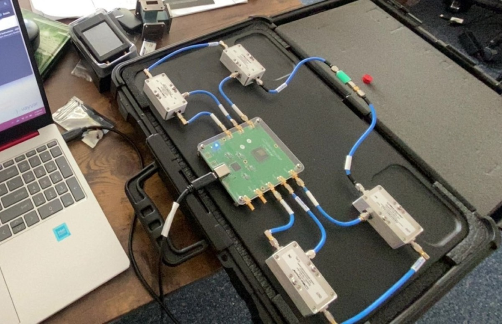

The RF measurement chain
From the test stimulus and device under test through measurement processing to MATLAB-based analysis. The diagram is a generalized functional view, not a reproduction of the original instrument's internal electronics.

UNR · Faculty-mentored Honors Signature Experience · Spring 2025
Student-initiated RF measurement and MATLAB analysis research, mentored by Dr. Jihwan Yoon
ENGINEERING EVIDENCE / AT A GLANCE
Automate two-port RF measurement analysis while accounting for calibration.
Developed a MATLAB virtual analyzer workflow through student-initiated Honors research mentored by Dr. Jihwan Yoon. Later reconstructed illustrations are separate from original instrument work.
MATLAB, two-port VNA, SOLT calibration method and S11/S21 plotting.
Reviewed documented 100 MHz–6 GHz scope and 12-term SOLT approach; six later synthetic analyzer tests were not instrument calibration.
A described MATLAB measurement/visualization workflow plus separate illustrative analysis reconstruction.
Original RF data and calibration coefficients are unavailable; plotted example traces are synthetic, not verified measurements.
This faculty-mentored Honors Signature Experience used MATLAB to connect RF calibration, measurement analysis, and S-parameter visualization. The project page separates the original documented workflow from subsequent synthetic illustrations.
See this Honors Signature Experience in my research overview ↗

RF ENGINEERING / VISUAL CASE STUDY
Three graphics explain the measurement chain, the visual interpretation of S-parameters, and the calibration methodology discussed in the original project. These are newly drawn educational graphics, not photographs, raw data, or screenshots from a recovered VNA.
From the test stimulus and device under test through measurement processing to MATLAB-based analysis. The diagram is a generalized functional view, not a reproduction of the original instrument's internal electronics.
Illustrative return and transmission traces show how different frequency responses can be presented and compared. Both traces use invented values solely to demonstrate what an analysis display communicates.

The Open, Short, Load, Thru sequence provides reference measurements for reducing systematic error. This figure describes the method referenced by the project, not a claim that a complete calibration routine has been recovered or rerun.

Automate two-port RF measurements while accounting for calibration errors.
Describe the original MATLAB-controlled RF workflow, its 12-term SOLT calibration approach, and S-parameter visualization; reconstructed analysis remains separate.
MATLAB, two-port VNA, RF calibration, S-parameter visualization.
The original project described a MATLAB analysis workflow for two-port RF measurements from 100 MHz to 6 GHz, including a 12-term SOLT calibration approach. The original calibrated files and source were not recovered during the current archive review.
A newly written MATLAB Touchstone S2P analyzer and a Python cross-check utility calculate S11, S21, return loss, VSWR and input impedance. The recovery package documents RF equations, calibration requirements, and a verification plan. Six Python unit tests passed using explicitly synthetic RF data. No restored instrument link, original measurement trace, or implemented 12-term SOLT correction is being claimed.
Inspectable on this page: an instrument-context photograph and explained signal-chain, calibration, and synthetic trace diagrams. The faculty-mentored research summary establishes the original project scope.
Evidence boundary: An instrument photograph is not proof of calibration. The diagrams and plotted traces are conceptual or synthetic, not recovered experimental data or a validated analyzer implementation. No original RF datasets or calibration coefficients are published.